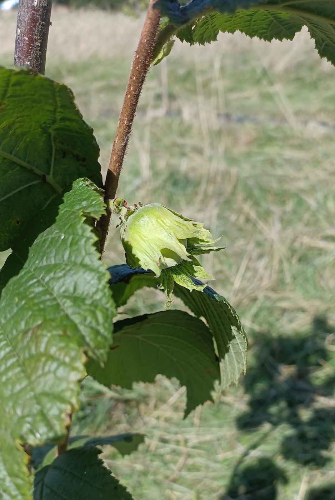

52 rassen, verspreid over drie continenten en drie bestemmingen

De eerste hazelnoot aan een jonge boom in Mont-Saint-Jean — voorjaar 2025
Onze hazelaarcollectie telt 52 rassen — geselecteerd op smaak, productiviteit, ziekteresistentie en niet in de laatste plaats op verhaal. De selectie spant van Spaanse landrassen (Alcover, Casina, Apegalos) tot Amerikaanse moderne Eastern Filbert Blight-tolerante kruisingen (Brixnut, Butler, Ennis, Yamhill) en Turkse, Italiaanse en Vlaamse klassiekers.
Vandaag groeit de collectie verder op drie plekken: in Noord-Frankrijk, op Het Schavaaienhof in Leuven, en op Grasroots in Vremde. Op die manier is de genetische diversiteit veilig gespreid — als één plek het laat afweten blijven de andere twee.
Hazelnoten zijn windbestuivers en bovendien protandrisch: mannelijke katjes en vrouwelijke bloemen rijpen niet altijd tegelijk. Daarbij komt nog de S-allele-incompatibiliteit — een genetisch slot dat zelfbestuiving tegengaat. In de praktijk wil dat zeggen: één hazelaar alleen draagt zelden, twee verschillende rassen samen al beter, drie of meer is ideaal.
Zoek op naam of synoniem. Filter op land van oorsprong, groeikracht, grootte van de noot, of habitus.
low productivity, medium suckering, protandrie-homogam, low oil (60.0%), and medium protein (16.4%) content, low kernel ratio (44.2%), low bleaching ability (73.3%), high tendency to alter bearing.
Volledige beschrijving
Vorm van de nootRound
EigenschappenKern: low kernel ratio · Olie: low oil · Productie: low productivity · Wortelopslag: Medium suckering
Great BritainGroei: SterkNoot: GrootHabit: RechtS3·S11
Medium productivity, medium late pollinator, high percentage of kernel, fibrous kernel, susceptible to big bud mite, incompatibility alleles S3S?
Volledige beschrijving
Vorm van de nootLong
Bloeimedium late pollinator
EigenschappenKern: susceptibility to big bud mite · Olie: medium late pollinator
ZiektegevoeligheidKnopmijt: susceptibility to big bud mite
E
Eastoka
Aanvullende gegevens nog niet beschikbaar.
emoa nr 1
Aanvullende gegevens nog niet beschikbaar.
Ennis
USAGroei: MiddelNoot: GrootHabit: MiddelS1·S11
Low blanching capacity, main variety in Oregon and France, incompatibility alleles S1S11
Volledige beschrijving
Vorm van de nootOblong
F
Fuscourubra
Aanvullende gegevens nog niet beschikbaar.
G
Gem
USAGroei: SterkNoot: GrootHabit: RechtS2·S14
Incompatibility alleles S14S2
Volledige beschrijving
Vorm van de nootLong
Giresum 54-56
Aanvullende gegevens nog niet beschikbaar.
Grand Traverse
Aanvullende gegevens nog niet beschikbaar.
Gunslebert
GermanyGroei: MiddelNoot: GrootHabit: OpenS5·S23
, high productivity, medium late pollinator, bad quality of kernel incompatibility alleles S5S23
Volledige beschrijving
SynoniemGunslebener, Gunslebert
Vorm van de nootRound
Bloeimedium late pollinator
EigenschappenOlie: medium late pollinator
Géant de Halle
Aanvullende gegevens nog niet beschikbaar.
H
Halle'sche Reisen
Aanvullende gegevens nog niet beschikbaar.
I
Imperial de Trébizonde
Aanvullende gegevens nog niet beschikbaar.
J
Jeeve's Samling
Aanvullende gegevens nog niet beschikbaar.
Jeeve’s Samling
Aanvullende gegevens nog niet beschikbaar.
K
Kwanten 29
Aanvullende gegevens nog niet beschikbaar.
Kwanten 32
Aanvullende gegevens nog niet beschikbaar.
Kwanten 33
Aanvullende gegevens nog niet beschikbaar.
L
Lang Tidlig Zellernoot
Aanvullende gegevens nog niet beschikbaar.
Lange Spaanse
Aanvullende gegevens nog niet beschikbaar.
Lombardie
Michigan, USA, from breeding by Cecil Farris, released 1989Groei: Semi-Vigorous, Does Particularly Well In Cold Eastern ClimatesNoot: MiddelHabit: Upright, Slightly Spreading, Matures To 10-15 Ft HeightS11·S25
Compressed and slightly pointed
Average weight 1.3 grams, 40-50% kernel by weight
25% Turkish Tree Hazel hybrid, corky bark, elongated nut husk fingers, flavorful, free of fiber, thin shell, late flow…
Volledige beschrijving
Vorm van de nootround
OpmerkingenCompressed and slightly pointed
Average weight 1.3 grams, 40-50% kernel by weight
25% Turkish Tree Hazel hybrid, corky bark, elongated nut husk fingers, flavorful, free of fiber, thin shell, late flowering, EFB tolerant/resistant
EigenschappenProductie: Yield 20+ lbs. at bearing age 2-3 years after planting
ZiektegevoeligheidEFB: Tolerant, possibly resistant, not immune, small cankers observed in 2018 trials
SynoniemMontebello, Santa Maria del Gesu, Nocchione
Vorm van de nootRound
Moturk-B
Aanvullende gegevens nog niet beschikbaar.
Moturk-D
Aanvullende gegevens nog niet beschikbaar.
N
Napoletana
Aanvullende gegevens nog niet beschikbaar.
Newburg
Aanvullende gegevens nog niet beschikbaar.
Nooksack
USAGroei: KleinNoot: GrootHabit: OpenSs6·Ss14
incompatibility alleles S6S14
Volledige beschrijving
SynoniemNooksock
Vorm van de nootRound
P
Pearson's Prolific
Aanvullende gegevens nog niet beschikbaar.
Purpurea
Aanvullende gegevens nog niet beschikbaar.
R
Reed
USAGroei: MiddelNoot: MiddelHabit: MiddelS12·S15
suited to areas in which varieties of the European species can not be grown due to lack of hardiness
Volledige beschrijving
Vorm van de nootRound
Riekchen's Zellernus
Aanvullende gegevens nog niet beschikbaar.
Rode Zellernoot
Aanvullende gegevens nog niet beschikbaar.
rosset
SpainGroei: KleinNoot: KleinHabit: Open
Synonym: Falseta, medium suckering, low vigour, low susceptibility to big bud mite, protogineus, high kernel ratio (48%)
Volledige beschrijving
SynoniemFalseta
Vorm van de nootOblong
EigenschappenKern: susceptibility to big bud mite · Productie: high kernel ratio · Wortelopslag: Medium suckering
ZiektegevoeligheidKnopmijt: susceptibility to big bud mite
S
Segorbe
SpainGroei: SterkNoot: MiddelHabit: RechtS9·S23
high vigour, medium suckering, productive, cold areas, good male flowering, highly protandrous, medium kernel ratio (44%), good kernel for industry incompatibility alleles: S9S23
Volledige beschrijving
Vorm van de nootOblong
EigenschappenKern: medium kernel ratio · Productie: medium kernel ratio · Wortelopslag: productive
High productive, High suckering, protandrie-homogam, high oil and protein content, high kernel ratio (48.9%), low bleaching ability (72.3%), less tendency to alter bearing.
Volledige beschrijving
Vorm van de nootLong
EigenschappenKern: high kernel ratio · Olie: high oil · Productie: high kernel ratio · Wortelopslag: productive
ZiektegevoeligheidEFB: high oil
T
tonda di gifoni
Aanvullende gegevens nog niet beschikbaar.
Tonda Rossa
ItalyGroei: SterkNoot: GrootHabit: RechtS8·S23
Volledige beschrijving
Vorm van de nootOblong
W
webb's prize cobb
Aanvullende gegevens nog niet beschikbaar.
Willamette
USAGroei: SterkNoot: MiddelHabit: MiddelS1·S3
moderately resistant to eastern filbert blight, intermediate susceptibility to big bud mites, incompatibility alleles S1S3
Volledige beschrijving
EigenschappenKern: susceptibility to big bud mite
ZiektegevoeligheidEFB: moderately resistant to eastern filbert blight · Knopmijt: moderately resistant to eastern filbert blight